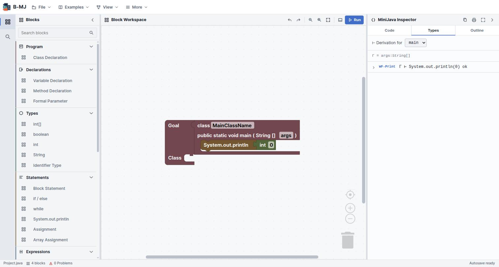

A laboratory for Java’s reference model
B-MJ is a block-based IDE for the full MiniJava language. Its real subject is not syntax but what a variable holds — and it settles that question by running your program under two different answers at once and showing you where they disagree.
What B-MJ is
Most teaching material explains object references with a diagram and a promise. B-MJ executes the distinction instead. Build a MiniJava program as blocks, then step it on a heap machine and watch references, activation frames and garbage collection as they happen.

Goal holding a main class, and the Inspector is already deriving a typing judgement
for it.Four things distinguish it from a MiniJava block editor:
- A grammar-aware renderer. Connector shapes encode MiniJava's non-terminals, so you can see which category a socket wants before you try to plug anything into it.
- A three-layer type system with holes. An incomplete block is consistent with everything, so one unfinished expression does not cascade errors across the program.
- Two value models, stepped in lockstep. Model A puts objects on a heap and makes aliasing real; Model B uses inline structural values. Same program, same control flow — different answer, when the program looks.
- A bidirectional text editor. MiniJava source and blocks are two views of one program.
B-MJ is one of the languages built at L-Workshop. It shares its bottom-panel layout and its Call-by-Structure / Call-by-Value tabs with B-Lambda, and its substitution-vs-machine correspondence idea with MnL. What is new here is the store: B-MJ's machine is a CESK machine, not a CEK machine, and that extra letter is the whole subject.
The workbench
The shell is a workbench over the language tools — it adds entry points and layout presets, not new language behaviour.
| Region | What lives there | Toggle |
|---|---|---|
| Header menus | File, Examples, View, More | — |
| Activity bar | Blocks · Search blocks | — |
| Blocks sidebar | The categorised toolbox | Ctrl + B |
| Block Workspace | The blocks, with zoom and ▶ Run | — |
| MiniJava Inspector | Code, Types, Outline | — |
| Bottom tools | Problems, Output, Semantics | Ctrl + J |
| Status bar | File name, block count, problem count, autosave | — |
The Inspector's Code tab is an editable MiniJava source view synchronised with the workspace; Types holds the typing derivation; Outline shows program structure. The five semantics views all live under Bottom tools → Semantics and are the subject of chapter 06.
Perspectives
Set from View → Perspective, from the command palette, or from the status bar.
| Perspective | Arranged for |
|---|---|
| Edit | Building a program: blocks, code, a focused workspace |
| Debug | The machine and execution tools |
| Type Analysis | Diagnostics and constraints |
| Presentation | A maximised block workspace, for teaching |
| Custom | What you get as soon as you adjust a panel by hand |
Layout state is namespaced in browser storage, so sidebar and code visibility, panel widths, the active activity and the perspective all survive a reload.
Both live in the View menu. The autosave interval is a slider rather than a fixed value — the default is 2 minutes. The status bar shows Autosave ready and then Autosaved with a timestamp.
Command palette
Ctrl + Shift + P opens a searchable list of every command, matched by keyword. It covers File (new, open, save, export, autosave), Run, Analysis (the CESK machine, the Model A vs B comparison, the rewrite semantics) and View commands. The full list is in the reference chapter.
Files and autosave
Workspaces save as .bml files. MiniJava source can be opened or exported separately, so
a program can leave B-MJ as ordinary .java-style text and come back as blocks.
- Save Ctrl + S writes a
.bmlworkspace. - Open Ctrl + O loads one back.
- Export writes the generated MiniJava source.
- Autosave keeps a rolling local backup at the interval you set.
Built-in examples
Twelve programs, roughly ordered by difficulty. The first ten are ordinary MiniJava; the last two exist specifically to drive a semantics view.
| Example | Shows |
|---|---|
| Simple Sum | The smallest complete program |
| Max Finder | Conditionals and comparison |
| Factorial | Recursion through a method call |
| Binary Search | Arrays and while |
| Shapes (Inheritance) | extends, overriding, nominal subtyping |
| Palindrome | Strings and charAt |
| Bubble Sort | Nested loops over an array |
| Sieve of Eratosthenes | A larger array algorithm |
| Stack (Push/Pop) | An object holding mutable state |
| Dynamic Array (Resizing) | Allocation and copying — good with the CESK store open |
| Aliasing Contrast (A vs B) | The two value models disagree: 4141 against 41 |
| Independent Copies (Rewrite) | Substitution semantics on the pure fragment |
If the workspace already has blocks, loading an example asks first and offers Replace or Merge. Merge drops the example alongside what you have rather than discarding it. This is the same convention as B-Lambda.
If you only run one example, make it Aliasing Contrast. It is nineteen lines of
MiniJava that produce two different answers depending on a single question — whether
y = x copies the object or shares it — and
the A vs B tab shows both answers being computed at the same
time.